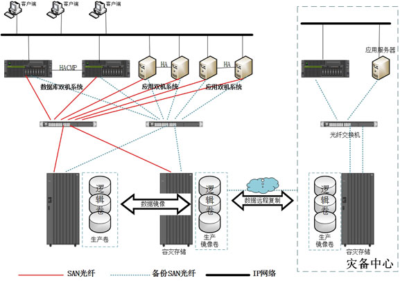

数据中心系统建设是我公司满足建设单位信息系统（应用软件、中间件软件、ORACAL数据库软件等）运行的要求，对数据中心系统进行设计，包括数据库服 务器、存储系统，应用服务器、三层交换机等；其意义不仅在于推动了传统数据中心向新一代数据中心过渡的进程，最重要的是为用户提供了符合国内需求的新 一代数据中心最佳方案，帮助用户降低总体拥有成本、进一步提升IT应用价值起到了非常重要的作用。
项目背景：数据中心解决方案能够很好的解决各种类型传统数据中心所遇到的各种问题：
在数据中心领域最关注的可靠性和可用性问题，将传统的信息级可靠性提升到数据中心级可靠性；
针对企业级数据中心关注的业务永续和系统安全性的问题，可以提供由基础网络架构、安全保护、应用优化、远程容灾和数据保护等解决方案构成的新一代 企业数据中心解决方案；
针对互联网数据中心关注的大流量问题，方案采用创新的分布式缓存、一次性精确调度和精细化QoS机制，很好的解决了突发性大流量带来的问题。
在数据中心领域最关注的可靠性和可用性问题，将传统的信息级可靠性提升到数据中心级可靠性；
数据中心解决方案能够很好的解决各种类型传统数据中心所遇到的各种问题：
